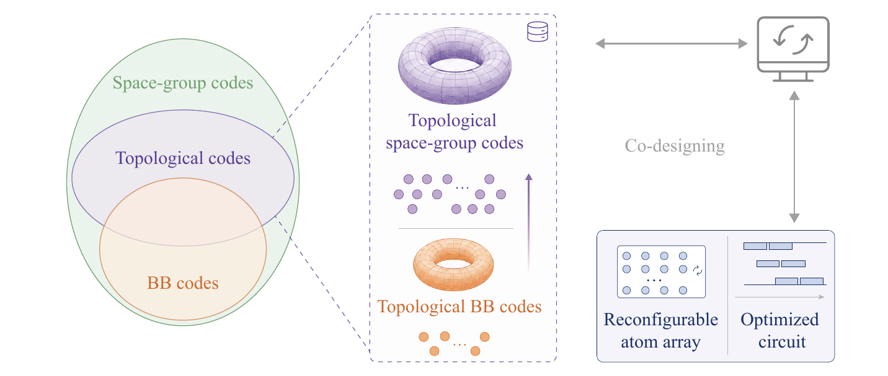
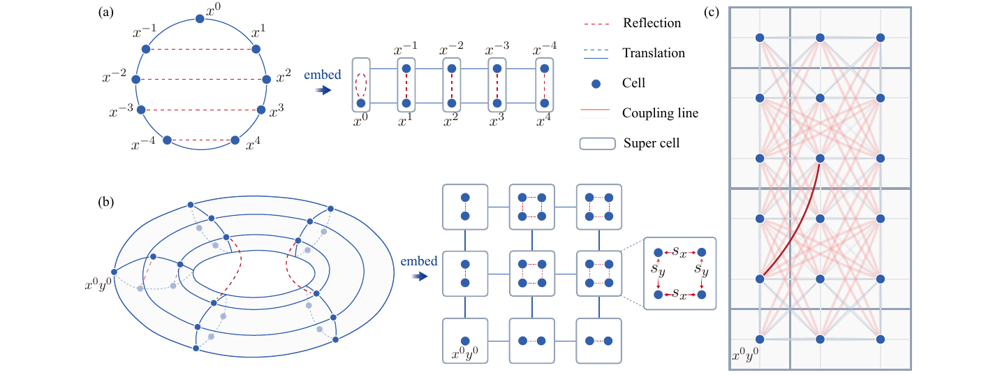
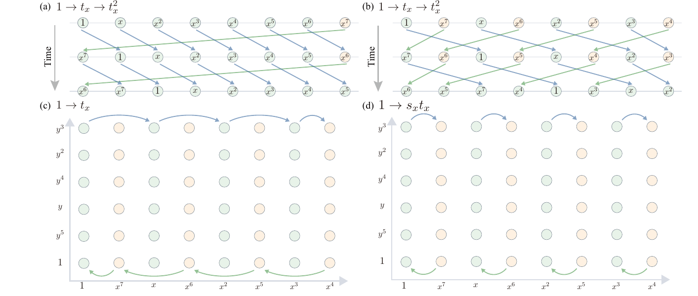
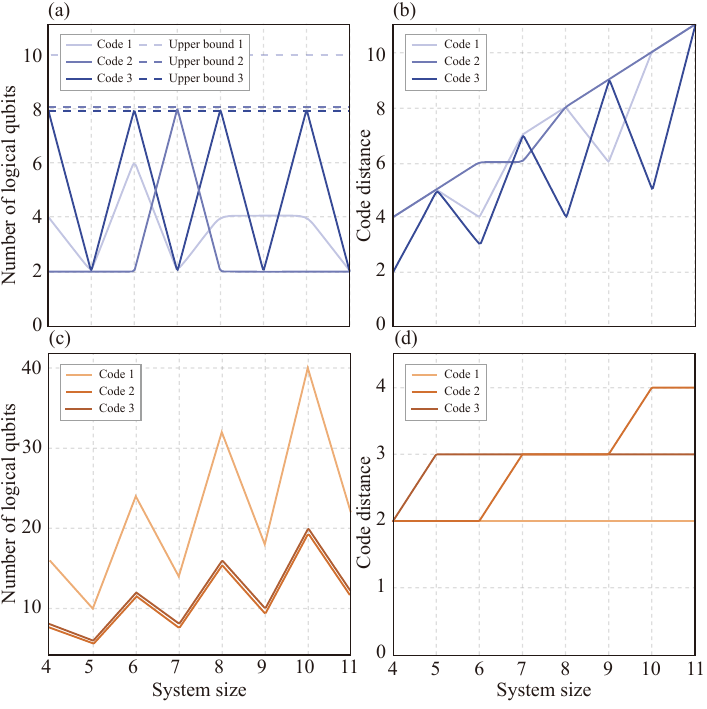

概述
一项新的理论研究提出利用空间群构造拓扑量子纠错码，打破了传统的平移不变性限制，有望提升码的局部性，并为量子计算机硬件协同设计开辟新道路。
研究概览
量子计算机的一个核心难题，是量子信息非常脆弱。普通电脑里的 0 和 1 可以通过复制、校验和重发来保护，但量子比特不能被简单复制，而且很容易受到环境噪声影响。量子纠错码就是为了解决这个问题而发展出来的数学和物理工具：它把一个逻辑量子比特分散存放到许多物理量子比特中，使局部错误可以被发现和修正，而不直接破坏真正想保存的信息。
在众多量子纠错方案中，拓扑码是一类特别重要的方案。它们把信息保护和几何结构联系起来：量子比特像铺在一张网格或晶格上，错误和校验规则则沿着局部邻近关系组织。这样的设计有一个重要优点：硬件上相邻的量子比特更容易相互作用，局域规则也更容易实现。因此，拓扑码长期以来被视为通向可扩展容错量子计算的重要路线。
传统拓扑码通常假设底层结构具有平移不变性。直观地说，就是整个码像规则瓷砖一样重复铺开：每一小块看起来都差不多，校验规则也周期性重复。这种假设让理论分析更清楚，也让许多模型可以被统一处理。但真实硬件并不总是天然适配这种最规则的平移结构。中性原子阵列、可重构量子器件和具有特殊几何约束的平台，往往更需要把旋转、反射、局部重排等空间操作也纳入设计。
这篇论文的目标，就是把拓扑量子纠错码从“只看平移重复”的框架中扩展出来。作者引入空间群作为统一语言。空间群不仅包含平移，也包含旋转、反射、滑移、螺旋等点群相关操作。用空间群描述拓扑码，相当于把“怎么平移”和“怎么转动、翻转、嵌入”放进同一个代数结构里讨论。这样一来，研究者可以系统地构造更丰富的 CSS 拓扑码，而不是只在传统平移不变模型附近做改动。
核心思路
论文的核心做法，是从空间群构造链复形，再由链复形生成 CSS 码。对普通读者来说，可以把链复形理解成一种有层次的“关系账本”：哪些对象是点，哪些对象连成边，哪些边围成面，以及它们之间怎样相互约束。CSS 码则把量子纠错中的两类校验规则分开处理，使错误检测和数学结构之间的对应更加清晰。
在这个框架下，空间群的作用不是简单地给已有图形加一点对称装饰，而是直接参与码的定义。平移操作决定结构怎样重复，点群操作决定结构怎样旋转、反射或在局部重新排列。作者把这些操作统一进代数描述中，从而可以判断构造出来的码是否具有拓扑性质，计算其中可能出现的任意子扇区，并分析这些码在具体硬件平台上是否保持局域性。
“任意子扇区”听起来很抽象，但可以粗略理解为拓扑码中错误或激发的类型分类。在一些二维拓扑系统中，激发不像普通粒子那样只分成简单的几类，而是带有特殊的融合和绕行规则。知道任意子扇区，就像知道这个拓扑码内部有哪些基本错误形态，以及它们之间如何组合、移动和相互识别。这对于理解码的保护能力和可操作性非常关键。
论文还特别讨论了 AOD 平台上的局域性。AOD 通常指声光偏转器相关的中性原子操控技术，可以在空间中移动和重排原子阵列。对这类平台来说，几何布局与可实现操作高度相关。如果某个量子纠错码虽然数学上漂亮，却要求远距离量子比特频繁相互作用，那么实验实现会很困难。空间群方法的价值之一，就是提供一种更接近硬件几何的设计语言，让理论构造和实际可操作性之间更容易对接。
几个术语
- 空间群
- 同时包含平移和点群对称性的几何对称群。
- CSS 码
- 一种把量子纠错条件拆分为 X 型和 Z 型校验的稳定子码。
- 任意子扇区
- 二维拓扑相中用于区分激发类型和融合规则的结构。
- AOD 平台
- 利用声光偏转器操控中性原子阵列的一类量子计算硬件平台。
后续展望
这项工作的意义，不只是提出一个新的码族或一个新的例子，而是提供了一种更系统的设计方法。过去，许多拓扑码研究从规则晶格出发，再考虑它们的变体；而空间群框架允许研究者从更广的几何对称结构出发，主动搜索适合不同硬件平台的拓扑码。它把数学上的对称性、物理上的拓扑保护和工程上的局域约束放到同一个讨论空间里。
后续可以沿着几个方向继续推进。首先，可以用这个框架系统枚举和比较更多空间群构造，寻找距离、码率和局域性之间更优的平衡。其次，可以结合具体硬件平台，例如中性原子阵列或其他可重构量子系统，研究哪些空间群码更容易部署。再次，解码算法也可以利用空间群结构获得新的优化思路，使错误诊断不只是依赖通用图算法，而能吸收构造本身的对称信息。
更长远地看，这类研究有助于把量子纠错从“给定硬件后寻找补救方案”推进到“硬件和纠错码共同设计”的阶段。量子计算机能否真正变得可靠，不仅取决于单个量子比特质量，也取决于我们能否把几何、控制、纠错和算法放在一起设计。空间群拓扑码提供的正是这样一种桥梁：它让抽象数学结构有机会更紧密地连接到未来量子计算设备的实际形状和操作方式。
论文图片




1 / 4